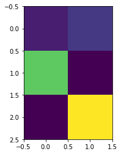

568 if http_err:
569 args = (dict, 'default', 'http_error_default') + orig_args
--> 570 return self._call_chain(*args)
571
572 # XXX probably also want an abstract factory that knows when it makes
C:\ProgramData\Anaconda3\lib\urllib\request.py in _call_chain(self, chain, kind, meth_name, *args)
502 for handler in handlers:
503 func = getattr(handler, meth_name)
--> 504 result = func(*args)
505 if result is not None:
506 return result
C:\ProgramData\Anaconda3\lib\urllib\request.py in http_error_default(self, req, fp, code, msg, hdrs)
648 class HTTPDefaultErrorHandler(BaseHandler):
649 def http_error_default(self, req, fp, code, msg, hdrs):
--> 650 raise HTTPError(req.full_url, code, msg, hdrs, fp)
651
652 class HTTPRedirectHandler(BaseHandler):
HTTPError: HTTP Error 404: Not Found
In [21]: from scipy.special import jn
In [22]: x = lnspace(0,4*pi)
---------------------------------------------------------------------------
NameError Traceback (most recent call last)
<ipython-input-22-8eade4bb8a0a> in <module>()
----> 1 x = lnspace(0,4*pi)
NameError: name 'lnspace' is not defined
In [23]: x = linspace(0,4*pi)
---------------------------------------------------------------------------
NameError Traceback (most recent call last)
<ipython-input-23-6efca3019a31> in <module>()
----> 1 x = linspace(0,4*pi)
NameError: name 'linspace' is not defined
In [24]: from scipy.special import jn
In [25]: x = linspace(0,4*pi)
---------------------------------------------------------------------------
NameError Traceback (most recent call last)
<ipython-input-25-6efca3019a31> in <module>()
----> 1 x = linspace(0,4*pi)
NameError: name 'linspace' is not defined
In [26]: for n in range(10):
...: print("The square of', n "is", n*n)
File "<ipython-input-26-5b71eb551f3a>", line 2
print("The square of', n "is", n*n)
^
SyntaxError: EOL while scanning string literal
In [27]: for n in range(10):
...: print("The square of", n, "is", n*n)
...: pass
...: print("done")
...:
The square of 0 is 0
The square of 1 is 1
The square of 2 is 4
The square of 3 is 9
The square of 4 is 16
The square of 5 is 25
The square of 6 is 36
The square of 7 is 49
The square of 8 is 64
The square of 9 is 81
done
In [28]: print(2**3)
8
In [29]: print(2***3)
File "<ipython-input-29-ce2bc981f18f>", line 1
print(2***3)
^
SyntaxError: invalid syntax
In [30]: # function that takes 2 numbers as input
...: # and outputs their average
...: def avg(x,y):
...: print("first input is", x)
...: print("second input is", y)
...: a = (x + y) / 2.0
...: print("average is", a)
...: return a
...:
In [31]: avg(1,2)
first input is 1
second input is 2
average is 1.5
Out[31]: 1.5
In [32]: avg(1,10)
first input is 1
second input is 10
average is 5.5
Out[32]: 5.5
In [33]: avg(0,10)
first input is 0
second input is 10
average is 5.0
Out[33]: 5.0
In [34]: import numpy
...:
In [35]: a = numpy.zeros( [3,2] )
...: print(a)
...:
[[ 0. 0.]
[ 0. 0.]
[ 0. 0.]]
In [36]: b = numpy.zeros( [3,3] )
...: print(b)
...:
[[ 0. 0. 0.]
[ 0. 0. 0.]
[ 0. 0. 0.]]
In [37]: a[0,0] = 1
...: a[0,1] = 2
...: a[1,0] = 9
...: a[2,1] = 12
...: print(a)
...:
[[ 1. 2.]
[ 9. 0.]
[ 0. 12.]]
In [38]: print(a[0,1])
...: v = a[1,0]
...: print(v)
...:
2.0
9.0
In [39]: import matplotlib.pyplot
In [40]: %matplotlib inline
In [41]: matplotlib.pyplot.imshow(a, interpolation="nearest")
Out[41]: <matplotlib.image.AxesImage at 0xd64c8eb240>

In [42]:
...:
...: # class for a dog object
...: class Dog:
...:
...: # dogs can bark()
...: def bark(self):
...: print("woof!")
...: pass
...:
...: pass
...:
In [43]: sizzles = Dog()
...: sizzles.bark()
...:
woof!
In [44]: sizzles = Dog()
...: mutley = Dog()
...:
...: sizzles.bark()
...: mutley.bark()
...:
woof!
woof!
In [45]: # class for a dog object
...: class Dog:
...:
...: # initialisation method with internal data
...: def __init__(self, petname, temp):
...: self.name = petname;
...: self.temperature = temp;
...:
...: # get status
...: def status(self):
...: print("dog name is ", self.name)
...: print("dog temperature is ", self.temperature)
...: pass
...:
...: # set temperature
...: def setTemperature(self,temp):
...: self.temperature = temp;
...: pass
...:
...: # dogs can bark()
...: def bark(self):
...: print("woof!")
...: pass
...:
...: pass
...:
In [46]: sizzles = Dog()
...: mutley = Dog()
...:
...: sizzles.bark()
...: mutley.bark()
...:
---------------------------------------------------------------------------
TypeError Traceback (most recent call last)
<ipython-input-46-68b7531aa633> in <module>()
----> 1 sizzles = Dog()
2 mutley = Dog()
3
4 sizzles.bark()
5 mutley.bark()
TypeError: __init__() missing 2 required positional arguments: 'petname' and 'temp'
In [47]: sizzles = Dog(sizzles, 23)
...: mutley = Dog(mutley, 19)
...:
...: sizzles.bark()
...: mutley.bark()
...:
woof!
woof!
In [48]: sizzles = Dog(sizzles, 23)
...: mutley = Dog(mutley, 19)
...:
...: sizzles.bark(self)
...: mutley.bark(self)
...:
---------------------------------------------------------------------------
NameError Traceback (most recent call last)
<ipython-input-48-2e8f3b2866a7> in <module>()
2 mutley = Dog(mutley, 19)
3
----> 4 sizzles.bark(self)
5 mutley.bark(self)
6
NameError: name 'self' is not defined
In [49]: sizzles.status()
dog name is <__main__.Dog object at 0x000000D64BFE8780>
dog temperature is 23
In [50]: sizzles = Dog("sizzles", 23)
...: mutley = Dog("mutley", 19)
...:
...: sizzles.bark(self)
...: mutley.bark(self)
...:
---------------------------------------------------------------------------
NameError Traceback (most recent call last)
<ipython-input-50-9fd70525f2e0> in <module>()
2 mutley = Dog("mutley", 19)
3
----> 4 sizzles.bark(self)
5 mutley.bark(self)
6
NameError: name 'self' is not defined
In [51]: sizzles = Dog("sizzles", 23)
...: mutley = Dog("mutley", 19)
...:
In [52]: sizzles.status()
dog name is sizzles
dog temperature is 23
In [53]: sizzles.setTemperature(40)
In [54]: sizzles.status()
dog name is sizzles
dog temperature is 40
In [55]: # neural network class definition
...: class neuralNetwork:
...:
...: # initialise the neural network
...: def __init__():
...: pass
...:
...: # train the neural network
...: def train():
...: pass
...:
...: # query the neural network
...: def query():
...: pass
...:
In [56]: # initialise the neural network
...: def __init__(self, inputnodes, hiddennodes, outputnodes, learningrate):
...: # set number of nodes in each input, hidden, output layer
...: self.inodes = inputnodes
...: self.hnodes = hiddennodes
...: self.onodes = outputnodes
...:
...: # learning rate
...: self.lr = learningrate
...: pass
...:
In [57]: # number of input, hidden and output nodes
...: input_nodes = 3
...: hidden_nodes = 3
...: output_nodes = 3
...:
...: # learning rate is 0.3
...: learning_rate = 0.3
...:
...: # create instance of neural network
...: n = neuralNetwork(input_nodes,hidden_nodes,output_nodes, learning_rate)
...:
---------------------------------------------------------------------------
TypeError Traceback (most recent call last)
<ipython-input-57-7ce1d3426dbb> in <module>()
8
9 # create instance of neural network
---> 10 n = neuralNetwork(input_nodes,hidden_nodes,output_nodes, learning_rate)
11
TypeError: __init__() takes 0 positional arguments but 5 were given
In [58]: # initialise the neural network
...: def __init__(self, inputnodes, hiddennodes, outputnodes, learningrate):
...: # set number of nodes in each input, hidden, output layer
...: self.inodes = inputnodes
...: self.hnodes = hiddennodes
...: self.onodes = outputnodes
...:
...: # learning rate
...: self.lr = learningrate
...: pass
...:
In [59]: def train():
...: pass
...: def query():
...: pass
...:
In [60]: # number of input, hidden and output nodes
...: input_nodes = 3
...: hidden_nodes = 3
...: output_nodes = 3
...:
...: # learning rate is 0.3
...: learning_rate = 0.3
...:
...: # create instance of neural network
...: n = neuralNetwork(input_nodes,hidden_nodes,output_nodes, learning_rate)
...:
---------------------------------------------------------------------------
TypeError Traceback (most recent call last)
<ipython-input-60-7ce1d3426dbb> in <module>()
8
9 # create instance of neural network
---> 10 n = neuralNetwork(input_nodes,hidden_nodes,output_nodes, learning_rate)
11
TypeError: __init__() takes 0 positional arguments but 5 were given
In [61]: class neuralNetwork:
...: # initialise the neural network
...: def __init__(self, inputnodes, hiddennodes, outputnodes, learningrate):
...: # set number of nodes in each input, hidden, output layer
...: self.inodes = inputnodes
...: self.hnodes = hiddennodes
...: self.onodes = outputnodes
...:
...: # learning rate
...: self.lr = learningrate
...: pass
...: def train():
...: pass
...: def query():
...: pass
...:
In [62]: # number of input, hidden and output nodes
...: input_nodes = 3
...: hidden_nodes = 3
...: output_nodes = 3
...:
...: # learning rate is 0.3
...: learning_rate = 0.3
...:
...: # create instance of neural network
...: n = neuralNetwork(input_nodes,hidden_nodes,output_nodes, learning_rate)
...:
In [63]: import numpy
In [64]: numpy.random.rand(3,3)
Out[64]:
array([[ 0.97737473, 0.45127786, 0.1067113 ],
[ 0.84990243, 0.53981211, 0.09308298],
[ 0.60836573, 0.9587476 , 0.64306791]])
In [64]:
In [65]: numpy.random.rand(3,3) -0.5
Out[65]:
array([[ 0.45484118, -0.40702433, 0.00195875],
[-0.05082528, -0.22778679, -0.07705303],
[-0.43045013, 0.20616784, -0.376782 ]])
In [66]: self.wih = (numpy.random.rand(self.hnodes, self.inodes) - 0.5)
...: self.who = (numpy.random.rand(self.onodes, self.hnodes) - 0.5)
...:
---------------------------------------------------------------------------
NameError Traceback (most recent call last)
<ipython-input-66-29c05448ea96> in <module>()
----> 1 self.wih = (numpy.random.rand(self.hnodes, self.inodes) - 0.5)
2 self.who = (numpy.random.rand(self.onodes, self.hnodes) - 0.5)
3
NameError: name 'self' is not defined
In [67]: self.wih = numpy.random.normal(0.0, pow(self.hnodes, -0.5), (self.hnodes, self.inodes))
...: self.who = numpy.random.normal(0.0, pow(self.onodes, -0.5), (self.onodes, self.hnodes))
...:
---------------------------------------------------------------------------
NameError Traceback (most recent call last)
<ipython-input-67-df84a10b1407> in <module>()
----> 1 self.wih = numpy.random.normal(0.0, pow(self.hnodes, -0.5), (self.hnodes, self.inodes))
2 self.who = numpy.random.normal(0.0, pow(self.onodes, -0.5), (self.onodes, self.hnodes))
3
NameError: name 'self' is not defined
In [68]: import numpy
...: # scipy.special for the sigmoid function expit()
...: import scipy.special
...:
In [69]: # neural network class definition
...: class neuralNetwork:
...:
...:
...: # initialise the neural network
...: def __init__(self, inputnodes, hiddennodes, outputnodes, learningrate):
...: # set number of nodes in each input, hidden, output layer
...: self.inodes = inputnodes
...: self.hnodes = hiddennodes
...: self.onodes = outputnodes
...:
...: # link weight matrices, wih and who
...: # weights inside the arrays are w_i_j, where link is from node i to node j in the next layer
...: # w11 w21
...: # w12 w22 etc
...: self.wih = numpy.random.normal(0.0, pow(self.hnodes, -0.5), (self.hnodes, self.inodes))
...: self.who = numpy.random.normal(0.0, pow(self.onodes, -0.5), (self.onodes, self.hnodes))
...:
...: # learning rate
...: self.lr = learningrate
...:
...: # activation function is the sigmoid function
...: self.activation_function = lambda x: scipy.special.expit(x)
...:
...: pass
...:
...:
...: # train the neural network
...: def train():
...: pass
...:
...:
...: # query the neural network
...: def query(self, inputs_list):
...: # convert inputs list to 2d array
...: inputs = numpy.array(inputs_list, ndmin=2).T
...:
...: # calculate signals into hidden layer
...: hidden_inputs = numpy.dot(self.wih, inputs)
...: # calculate the signals emerging from hidden layer
...: hidden_outputs = self.activation_function(hidden_inputs)
...:
...: # calculate signals into final output layer
...: final_inputs = numpy.dot(self.who, hidden_outputs)
...: # calculate the signals emerging from final output layer
...: final_outputs = self.activation_function(final_inputs)
...:
...: return final_outputs
...:
In [70]: ---------------------------------------------------------------------------
FileNotFoundError Traceback (most recent call last)
<ipython-input-70-76f40436b046> in <module>()
----> 1 data_file = open("mnist_dataset/mnist_train_100.csv", 'r')
2 data_list = data_file.readlines()
3 data_file.close()
4
5 len(data_list)
FileNotFoundError: [Errno 2] No such file or directory: 'mnist_dataset/mnist_train_100.csv'